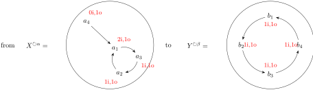
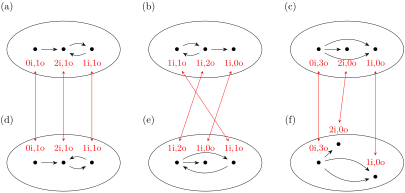
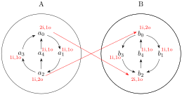
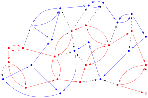

Section4.6Session 11: Ascending to categories of richer structures
I’ve finally reached the point marked by my old bookmark! I can kind of see why I got stuck here before and I’m defininately finding it convenient to have all my solutions to the previous exercises nicely organized. I find myself referring back to earlier problems to use as steps increasingly often.
In particular, I found myself seeing a lot of connections between this Sesssion and Sessions 9 and 10. I think I’m still a little uncertain about how to use the split idempotent result and it’s relation to the fixed point theorem. While I made it through the section, I get this sneaking suspicion that I’m overlooking a more obvious solution to Exercise 8.
I also had this idea about "counting arrows in and out" that seemed extremely helpful this week but also very informal. I wonder if there’s a way to formalize that approach a little better to determine whether or not graphs are isomorphic.
Figure4.6.2.Provided diagram for Session 11 Exercise 1
It’s clear from the diagram that the loop of 3 points in the source on could be matched up with a similar loop of 3 in the destination.
Figure4.6.3.Matched up loops shown in dashed arrows
If we include any of the points outside the loop or attempt to alter the order the resulting map would fail to preserve the structure of our endomap. That means there are a total of 3 possible maps, each being a permutation of the loop.
I think there’s a typo in the diagram here and it should really say \(Y^{\circlearrowright \beta}\) instead of \(X^{\circlearrowright \beta}\) as so:
Figure4.6.5.Given diagram for Session 11 Exercise 2
As in Exercise 1, I think we have exactly 3 isomorphisms here. If we choose a point of origin \(\mathbf{1} \xrightarrow{x} X\) (say \(a\)) and a target point \(\mathbf{1} \xrightarrow{y} Y\) (say \(p\)) then the remaining assignments are determined by our endomaps. Once we assign some \(x\) to some \(y\text{,}\) we’re forced to map \(\alpha x\) to \(\beta y\) and \(\alpha^2 x\) to \(\beta^2 y\text{.}\)
Since we’re mapping each point in \(X\) to a unique point in \(Y\) our map is "1-1". Since every value in \(Y\) is covered by some input in \(Y\) our map is "onto". Being both, it would be an isomorphism. All that remains it to show it preserves the structure of \(f \alpha = \beta f\text{.}\)
Knowing that \(f\) is invertable, we can apply \(f^{-1}\) to the left and right of \(f \alpha = \beta f\text{.}\) This gives us \(f^{-1} f \alpha f^{-1} = f^{-1} \beta f f^{-1}\) which can be simplified to \(\alpha f^{-1} = f^{-1} \beta\) which demonstrates that \(f^{-1}\) is a valid \(\mathcal{S}^{\circlearrowright}\)-map.
We’re given the following structures of domain and codomain:
Figure4.6.7.Given diagram for Session 11 Exercise 3
Suppose we did have some isomorphism \(X^{\circlearrowright \alpha} \xrightarrow{f} Y^{\circlearrowright \beta}\) preserving the relation \(f \alpha = \beta f\text{.}\) We provided in the previous exercise that the inverse must also preserve structure, namely that \(f^{-1}\) satisfies \(f^{-1} \beta = \alpha f^{-1}\text{.}\) I felt it was helpful to view the relations as an external diagram:
Figure4.6.8.External diagram of endomaps in Session 11 Exercise 3
If our isomorphism \(f\) existed, the structure preserving equations provide alternative representations of the endomaps \(\alpha\) and \(\beta\text{.}\) Apply \(f^{-1}\) to both sides of \(f \alpha = \beta f\) from both sides. On the left we get \(f^{-1} f \alpha = \alpha = f^{-1} \beta f\) and the right we get \(f \alpha f^{-1} = \beta f f^{-1} = \beta\text{.}\) However, there’s a problem with this. The map \(\alpha\) is idempotent with \(\alpha^4 = \alpha \neq 1_X\) while the map \(\beta\) is an automorphism with \(\beta^4 = 1_Y\text{.}\)
Since we can express \(\alpha\) in terms of \(\beta\) using \(f^{-1} \beta f\text{,}\) then we can also express \(\alpha^4\) as \((f^{-1} \beta f)(f^{-1} \beta f)(f^{-1} \beta f)(f^{-1} \beta f)\text{.}\) The associative property allows us to regroup these terms as \(f^{-1} \beta (f f^{-1}) \beta (f f^{-1}) \beta (f f^{-1}) \beta f\text{.}\) Using the identity property this simplifies to \(\alpha^4 = f^{-1} \beta^4 f\text{,}\) but since \(\beta^4 = 1_Y\) we can further simplify to \(f^{-1} 1_Y f = f^{-1} f = 1_X\text{.}\) However, this is a contradiction to our observation eariler that \(\alpha^4 = \alpha \neq 1_X\text{.}\) It follows that our assumption about the existence of \(f^{-1}\) is false and no such map exists.
I think the key here is that an isomorphism between endomaps must preserve the number of paths into and out of each point. Consider the following labeled diagram with the number of arrows in and out at each point:

Figure4.6.9.Labeled version of diagram for Session 11 Exercise 3
Note that \(\beta\) is invertable so it needs to have precisely one arrow in and one arrow at each point. The map \(\alpha\) is clearly not invertable. There is no arrow leading into \(a_4\) so it’s not "onto" and the two leading into \(a_1\) implies it’s also not one-to-one. Consider the table of values:
Table4.6.10.Table of values for \(f \alpha\) and \(\beta f\)
\(x \in X\)
\(\alpha x\)
\(f \alpha x\)
\(f x\)
\(\beta f x\)
\(a_1\)
\(a_3\)
\(b_{?3}\)
\(b_{?1}\)
\(b_{?2}\)
\(a_2\)
\(a_1\)
\(\boxed{b_{?1}}\)
\(b_{?2}\)
\(\boxed{b_{?3}}\)
\(a_3\)
\(a_2\)
\(b_{?2}\)
\(b_{?3}\)
\(b_{?4}\)
\(a_4\)
\(a_1\)
\(\boxed{b_{?1}}\)
\(b_{?4}\)
\(\boxed{b_{?1}}\)
Note that our \(b_?\) might vary depending on how we choose our map \(f\text{,}\) but there are 4 distict values in the column for \(\beta f\) and only 3 distinct values in the column for \(f \alpha\text{.}\) Even if \(f\) were allowed to be non-invertable, there will never be any map \(f\) that could possibly makes those two columns equal.
I think I actually used this as part of my solution to Exercise 2. We’re given \(A^{\circlearrowright \alpha} \xrightarrow{f} B^{\circlearrowright \beta}\) in \(\mathcal{S}^{\circlearrowright}\) and know that "as sets" \(\exists f^{-1}: B \rightarrow A\text{.}\) We can take the structure preserving property of \(f\) to establish \(f \alpha = \beta f\text{,}\) then apply \(f^{-1}\) before and after to get \(f^{-1} f \alpha f^{-1} = f^{-1} \beta f f^{-1}\text{.}\) Use the identity property to get \(\alpha f^{-1} = f^{-1} \beta\) which establishes \(B^{\circlearrowright \beta} \xrightarrow{f^{-1}} A^{\circlearrowright \alpha}\) as a valid \(\mathcal{S}^{\circlearrowright}\)-map.
We’re given \(\alpha(n) = n + 2\) in \(\mathbb{Z}^{\circlearrowright \alpha}\) and \(\beta(n) = n + 3\) in \(\mathbb{Z}^{\circlearrowright \beta}\text{.}\) We want to find out if there’s an isomorphism \(\mathbb{Z}^{\circlearrowright \alpha} \xrightarrow{f} \mathbb{Z}^{\circlearrowright \beta}\text{.}\)
In order for this to preserve structure, we’d need \(f \alpha = \beta f\text{.}\) This is equivalent to saying that \(\forall n \in \mathbb{Z}: f(\alpha(n)) = \beta(f(n))\text{.}\) Expanding our definitions of \(\alpha, \beta\) gives us \(f(n) + 2 = f(n + 3)\text{.}\)
I’m going to claim the map \(f(n) = \frac{2}{3} n\) has this desired property. Making this substitution to both sides of our previous experession gives us \(f(n) + 2 = \frac{2}{3} n + 2\) and \(f(n + 3) = \frac{2}{3}(n+3) = \frac{2}{3} n + \frac{2}{3} \times 3 = \frac{2}{3} n + 2\text{.}\) Since both sides are equivalent, this \(f\) preserves structure.
To establish that \(f\) is invertable, we can define \(f^{-1}(n) = \frac{3}{2} n\text{.}\) Since \((f \circ f^{-1})(n) = \frac{2}{3} \times \frac{3}{2} \times n = n\) and \((f^{-1} \circ f)(n) = \frac{3}{2} \times \frac{2}{3} \times n = n\) it follows that this is a valid inverse for \(f\text{.}\) As in the previous exercise, it follows that applying \(f^{-1}\) on the left and right of \(f \alpha = \beta f\) gives us \(\alpha f^{-1} = f^{-1} \beta\) which establishes structure preservation for \(f^{-1}\text{.}\)
Having shown that the inverse exists and preserves structure I think we’re done here.
I think there’s an obvious solution that matches the top row with the bottom row from left to right. To verify this, I’m going to label the "in" and "out" counts at each point like I did in Exercise 3:

Figure4.6.14.Labeled version of diagram for Session 11 Exercise 6
It’s pretty clear that this is the only possible pairing of points that keeps the number of arrows in and out the same. Thus, our graph pairs are (a) with (d), (b) with (e) and (c) with (f).
My strategy of labeling counts of arrows in and out seems to be working well so far, so I’ll apply it here also:

Figure4.6.16.Labeled diagram for Session 11 Exercise 7
Labeling my counts in this way makes it clear that this diagram has been flipped vertically and shuffled arround a bit. Any isomorphism \(f: A \rightarrow B\) will need to map \(a_0\) to \(b_2\) and \(a_2\) to \(b_0\) to preserve the in/out arrow counts at each point.
The remaining 3 points all have 1 arrow in and 1 arrow out. However, the left diagram has 2 paths leading up and 1 leading down while the right diagram has 2 paths leading down and 1 leading up. Knowing that we’ve flipped the diagram vertically, we’d need to match the path down in the left diagram with the path up it the right diagram — pairing point \(a_1\) with \(b_4\text{.}\) The remaining two points from each figure can be matched up either way without altering the structure.
It follows that there are precisely 2 isomorphisms \(f_1,f_2\) from \(A\) to \(B\text{.}\) Both maps necessirly have \(f_n a_0 = b_2\text{,}\)\(f_n a_2 = b_0\text{,}\) and \(f_n a_1 = b_4\text{.}\) Where they differ is how they handle \(a_3\) and \(a_4\text{:}\)\(f_1 a_3 = b_1\) and \(f_1 a_4 = b_3\) while \(f_2 a_3 = b_3\) and \(f_2 a_4 = b_1\text{.}\)
We’re given any graph \(G\) with two dots \(b, e\text{,}\) and the graph \(J\) as diagrammed below:
Figure4.6.18.Graph \(J\) for Session 11 Exercise 8
For (a), we’re given a map of graphs \(G \xrightarrow{f} J\) with \(fb = 0\) and \(fe = 1\text{.}\) We want to show that there is no path in G that begins at \(b\) and ends at \(e\text{.}\)
Since \(f\) produces both points in \(J\) it must be surjective, having a section \(J \xrightarrow{s} G\) such that \(f s = 1_J\text{.}\) This map \(s\) is determined by \(s0 = b\) and \(s1 = e\text{.}\) We can then use this map to build an endomap \(G \xrightarrow{\alpha} G\) by composing \(f\) and \(s\) in the reverse order: \(\alpha = s f\text{.}\) Note that \(\alpha b = s f b = s 0 = b\) and \(\alpha e = s f e = s 1 = e\) so \(\alpha\) has at least two fixed points. Further note that \(\alpha\) is idempotent since \(\alpha^2 = s f s f = s 1_J f =
s f = \alpha\text{.}\)
Suppose there was such a path from \(b\) to \(e\) in \(G\text{.}\) We could think of this path as another "endomap" on some subset of the dots \(P \subset G\) on our graph forming our "path". We can identify some \(P \xrightarrow{\beta} P\) with the propery that each application of map takes us one step along that path from \(b\) to \(e\) until we arrive and stay there. In otherwords, we have a sequence of points \(b \rightarrow \beta b
\rightarrow \beta^2 b \rightarrow ... \rightarrow \beta^n b = e\) where \(n\) is the number of nodes we traverse. We can also use this to define a reverse path by swapping the source and target of each arrow to produce an inverse map \(\beta^{-1}\) that traverses these points in the opposite order: \(e \rightarrow \beta^{-1} e \rightarrow
\beta^{-2} e \rightarrow ... \rightarrow \beta^{-n} e = b\text{.}\) However, note that the arrows of \(\beta^{-1}\) might not necessarily exist in the original graph \(G\text{.}\)
Consider what happens when we apply \(\alpha\) to these points in the path. For \(f\) to preserve structure, we need to have \(f \alpha = \beta f\text{.}\) But since \(\alpha = s f\text{,}\) we have \(f \alpha = f s f = 1_J f = f\) which implies \(\beta = 1_J\) for all points in our path. In otherwords, any point accessible from \(b\) must get mapped to \(0\text{.}\)
I imagine this process to be something like "coloring the graph". We can start at point \(b\) and paint it "blue", then follow each arrow leading out of \(b\) and paint those points "blue" as well. At the same time, we can start at point \(e\) and paint it "red" but this time we take the arrows with a target of \(e\) and paint the point at the source "red". If we repeating the process as many times as we’re able we’ll eventually get a "purple" point or arrow if the paths do in fact connect.
To get a feel for this, let’s try it with the example graph on the same page:

Figure4.6.19.Sample graph to illustrate path coloring
Coloring the figure like this is a lot of work, but having done so makes it clear that there is no possible path between \(b\) and \(e\) in this diagram. The dashed arrows show edges that were neither transversed forward from \(b\) nor backwards from \(e\text{.}\) Both of these paths formed closed loops. We’re unable to connect the two loops without an arrow with a red source and blue destination.
Consider the commutative diagram of our endomap \(\beta\) on the subset of points forming our path \(P\text{.}\) Since \(f\) must preserve structure, we want \(f \beta = \gamma J\) for any endomap \(J \xrightarrow{\gamma} J\text{.}\)
Figure4.6.20.Commutative diagram of endomaps determined by \(f\)
In this situation, there are only two possible endomaps \(\gamma\) that can exist using the arrows and dots from \(J\text{.}\) Our map \(\gamma\) can either be the identity map \(1_J\) or the standard idempotented with \(\gamma j = 0\) for any \(j \in K\text{.}\) Knowing that \(f \beta = \gamma f\text{,}\) consider what happens in each situation. If \(\gamma = 1_J\) then \(f \beta = 1_J f = f\) implies \(\beta = 1_P\) which contradicts our assumption that \(\beta^n b = e \neq b\text{.}\) If \(\forall j \in J: \gamma j = 0\text{,}\) then \(f \beta = \gamma f\) implies \(f \beta p = 0\) for all \(p \in P\) which contradicts \(f e = 1\text{.}\)
I see a lot of similarity here with the Brouwer’s Theorems indroduced earlier. Essentially, by thinking of the path as an endomap we need to have a "fixed point" or we can’t have a "retraction at the boundary".
For (b) we need to prove the converse. Suppose we have some path from \(b\) to \(e\) in \(P \subset G\text{.}\) If we think of that path as an endomap \(\beta: P \rightarrow P\) as described above, then that endomap must have a fixed point \(p\) *somewhere*. That point obviously can’t be \(b\) because \(\beta b = b\) contradicts our notion of a path. Likewise, it couldn’t fix any \(\beta^n b\) along the path either, so the only reasonable fixed point would be \(e\text{.}\) As before, \(P^{\circlearrowright \beta} \xrightarrow{f} J^{\circlearrowright \gamma}\) would need to preserve the structure of both possible endomaps on \(J\text{.}\) If \(\gamma = 1_J\) then \(f \beta = \gamma f = f\) implies \(\beta = 1_P\) which contradicts \(\beta b \neq b\text{.}\) If \(\forall j \in J: \gamma j = 0\) , then that contradicts our condition that \(f \beta = \gamma f\) since \(f \beta e = f e = 1\) but \(\gamma f e = \gamma 1 = 0\text{.}\)
In other words, the existence of an intermediate point in this path prevents us from having a retraction at the boundary because we know there’s we can’t possibly have retraction to a map from a 3-point space to a two point space. It follows that the endomap describing our path must have a fixed point, but we can’t have a fixed point in the path or we’ll never reach our destination.